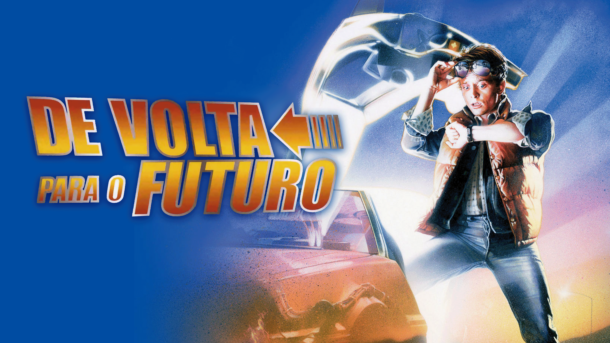

De Volta para o Futuro (1985)
Em 1985, o jovem Marty McFly leva uma vida comum com sua família problemática e cultiva uma amizade inusitada com o excêntrico cientista Doc Brown, que transforma um carro DeLorean em uma máquina do tempo movida a plutônio. Durante um teste noturno no estacionamento de um shopping, o grupo de terroristas líbios de quem Doc roubou o material radioativo ataca a dupla, e Marty acaba fugindo no veículo, atingindo as 88 milhas por hora necessárias para viajar no tempo e indo parar em 5 de novembro de 1955. Sem plutônio para fazer a viagem de volta, ele ainda interfere acidentalmente no primeiro encontro de seus próprios pais e faz com que sua mãe, Lorraine, se apaixone por ele, apagando aos poucos a própria existência. Para voltar para casa e salvar a vida de Doc no futuro, Marty precisa convencer a versão mais jovem do cientista a ajudá-lo a canalizar a energia de um raio na torre do relógio da cidade — gerando os 1,21 gigawatts necessários para ativar o carro — enquanto trabalha como cupido para que seu tímido pai, George, enfrente o valentão Biff Tannen e conquiste Lorraine durante o icônico baile da escola.